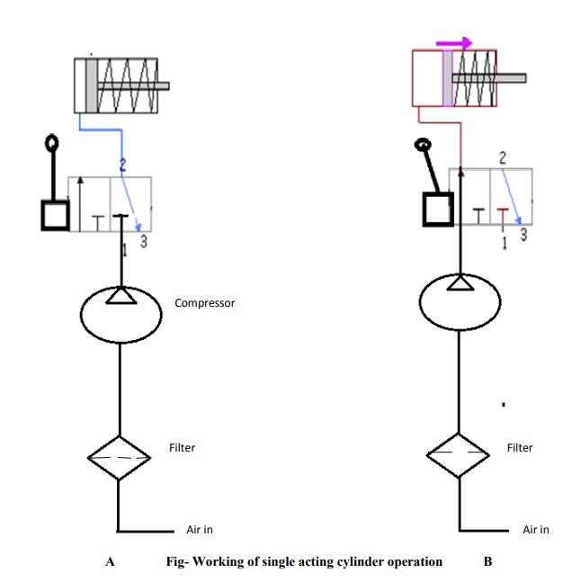
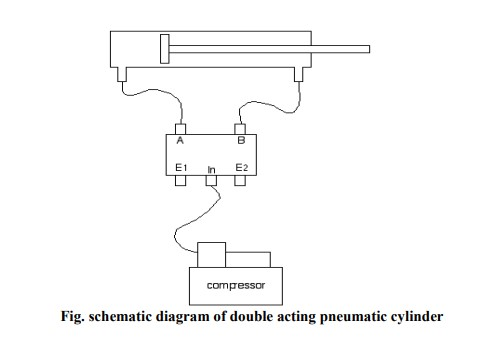
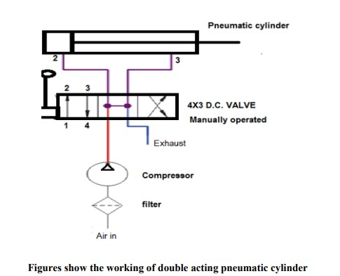

Basic pneumatic circuit for the working of single and double acting cylinder
Aim:
To Study of Basic pneumatic circuit for the working of single and double acting cylinder
APPARATUS REQUIRED:
Air tank, filter, compressor, junction box, manually operated, 2x3 D.C. valve single acting cylinder, double acting cylinder, pipes,
Circuit Diagram :


Theory :
Connect all components as per above shown fig.high pressurized air enters in 3X2 Valve manually forward positions of lever air enters in cylinder, When lever operated backward the air exhausted in surrounding through port E due to force of compressed spring.
Forward motion-Due to pressurized air enters in cylinder.
Backward motion- spring pressure applied on area of piston surface A] In fig. there is return movement of piston due to spring force. So air is delivered (exhausted) to atmosphere. Here 3x2 direction control valve is used. The air is exhausted to atmosphere through port 2 to 3. B] In fig. there is forward movement of piston due to high pressure air. So air is entered to cylinder. And apply the force on piston surface Here 3x2 direction control valve is used. The air is entered in cylinder through port 1 to 2.
Schematic Diagram :
Theory :
Theory: In above pneumatic circuit we have used 4x3 D.C. valves. The valve is having four ports
- Port 1 is connected to compressor
- Port 3 is relieved to atmosphere through muffler.
- Port 4 & 2 are connected to pneumatic cylinder
- Port 4 & 2 are connected to pneumatic cylinder
Forward position - At forward movement of piston, port 1is connected to port 4 and port 2 is connected to port 3
Retract position - At reverse movement of piston, port 1is connected to port 2 and port 4 is connected to port 3.
Procedure:
- Switch on the compressor to store high pressure air.
- Connect the pipes as per circuit shown above.
- Connect air reservoir to junction box
- Check pressure level in tank to be full shown by indicator
- Observe the reciprocating motion of Single acting and double acting cylinder.
- Observe the rotary motion of hydraulic motor.

Simulation
Result
The simulation of pneumatic circuit for the working of single and double acting cylinder were implemented.
Applications :
Used in industries for fitting the component of job